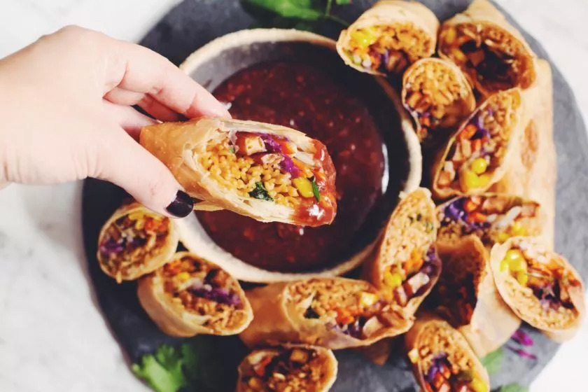

Vegan Ramen Egg Rolls

Description
This mouth watering take on an egg roll is
not only delicious but also vegan. It takes a
little bit more work to prep and put together but
oh is it worth it. It's everything you love
about a hot bowl of ramen stuffed into a crispy
egg roll and pair with a magnificent sweet and
sour sauce.
Ingredients
Tofu Bacon
- 1 x 350 g brick tofu firm
- 1/4 C low sodium soy sauce
- 2 tbsp maple syrup
- 1 tbsp liquid smoke
- 1 tsp smoked paprika
Spring Rolls
- 300 g ramen noodles, cooked according to the package directions and drained (discard seasoning packs)
- tbsp miso paste
<1i>1 tbsp vegtable oil
- 3 tbsp toasted sesame oil
- 3 tbsp low sodium soy sauce
- 1 C cilantro, roughly chopped
- 2 C carrots, fine julienne
- 2 C purple cabbage, thinly sliced
- 2 C bean sprouts
- 1 1/2 C frozen corn kernels, thawed and drained
- 2 to 3 green onions, sliced thinlt lengthwise (about two inches long)
- 1 tbsp cornstarch
- 1 tbsp water
- 2 packages large size spring roll pastry, defrosted (40 sheets)
Pomegranate sweet & sour sauce
- 1 tbsp vegtable oil
- 2 tbsp garlic
- 1/2 tsp minced fresh ginger
- 1 C pomegranate juice
- 1/3 C unseasoned rice vinegar
- 1/2 C granulated sugar
- 3 tbsp low-sodium soy sauce
- 1/4 tsp sea salt
- 1/4 tsp ground black pepper
- 1/2 tsp chili flakes
- 2 tbsp cornstarch
- 2 tbsp water
Steps
- Make the tofu bacon first, or make it ahead of time. Drain the tofu from the packaging water and pat dry with paper towels. Cut it into spears or thin shoe string pieces. Combine the low-sodium soy sauce or tamari, maple syrup, liquid smoke, and smoked paprika with a whisk in a wide shallow dish. Place tofu in the marinade and set aside for 15 minutes.
- Preheat the oven to 425°F and line a baking sheet with parchment paper. Spread the tofu slices in an even layer and bake for 25 to 30 minutes, flipping halfway through the bake time. If there is excess marinade you can brush it on the pieces of tofu halfway through baking when flipping the pieces.
- In the meantime, cook the ramen noodles in a pot of boiling water for about 3 minutes. Do not overcook. Drain from the cooking water and do not rinse ramen noodles. In a mixing bowl, combine vegetable oil, miso paste, sesame oil, and low-sodium soy sauce and combine until smooth. Add the cooked ramen noodles and cilantro and toss to evenly coat.
- Set the noodles aside with all of the other pre-cut vegetables and tofu bacon.
- To make the sweet and sour sauce, heat a saucepan over medium-low heat with vegetable oil. Once hot, add garlic and minced ginger. Cook for 2 to 3 minutes.
- Add pomegranate juice, rice vinegar, sugar, low-sodium soy sauce, sea salt, ground black pepper, and chili flakes and stir to combine. Bring to a simmer, which takes about 3 minutes over medium heat. Make a cornstarch slurry by mixing water and cornstarch in a small bowl until smooth.
- Once the sauce comes to a low simmer, whisk in the cornstarch slurry and turn the heat down slightly. Stir and cook for another 3 minutes while whisking constantly until thickened and glossy. You can set it aside while you assemble and deep fry the spring rolls.
- To make the spring rolls, combine cornstarch with water to make a thin slurry. Ensure you’ve defrosted your spring roll pastry in the fridge overnight. Place the stack of pastry sheets on a plate covered with a damp tea towel and have a clean surface ready to roll the spring rolls on.
- It's best to use 2 sheets per roll to prevent tearing. Place sheets in front of you in a diamond formation. Add 1/4 cup of ramen noodles in the lower third of the corner closest to you. Then add tofu bacon, cabbage, carrot, green onion, bean sprouts, and corn kernels.
- Roll the bottom corner over the filling, gently tucking it underneath and make one full roll over. Then fold each side over and into the center and continue rolling. Wet the top corner with the cornstarch slurry and as you roll it over, smooth it out with a finger so it sticks to the side of the spring roll, sealing it well.
- You can make all the spring rolls and place finished rolls a baking sheet or plate covered with a damp towel in one layer before deep frying.
- When you're nearly done rolling all the spring rolls, add the 2 to 3 cups of vegetable oil to a heavy-bottomed pot or deep fryer. There should be at least 2 inches of oil to fully submerge the rolls while frying. Heat it to 365°F to 375°F on a deep frying thermometer, or on the dial on your deep fryer.
- Fry spring rolls in batches of 3 to 4 rolls for about 5 minutes until light golden brown. You may need to flip them during the frying time. Remove them with a slotted frying spoon and place onto paper towel on a plate or baking sheet. Continue deep frying in batches, ensuring your oil is at the right temperature before adding the next spring rolls to the oil.
- The spring rolls should remain hot while you fry all of the rolls. Slice them in half and serve immediately with the sweet and sour dipping sauce. They’re best served immediately, but if you have leftovers and you want to reheat these you can place them on a baking sheet and heat through in an oven preheated to 375°F.